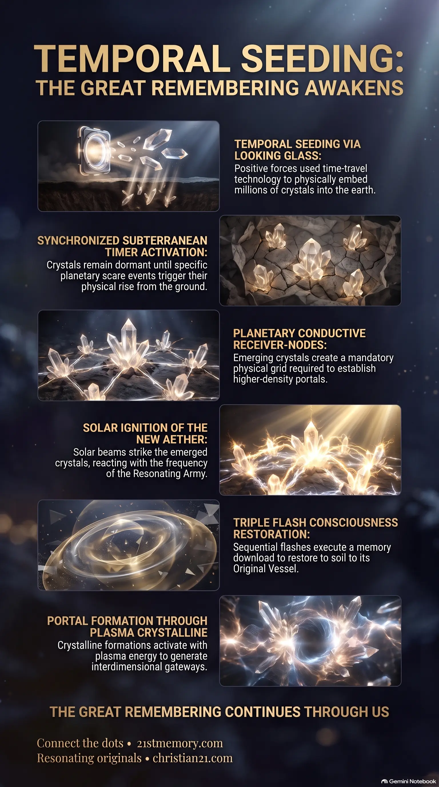

Subterranean Quartz Crystals and the Solar Trigger
Subterranean Quartz Crystals and the Solar Trigger — pre-implanted quartz conductors emerge from the earth and receive the solar activation that ignites the EMP Grid.
Pre-implanted subterranean quartz conductors, seeded by Looking Glass time travel, store cosmic memory, ignite a planetary EMP Grid, and restore original vessels.
Test your understanding of Quartz Crystal Technology — pre-implanted subterranean conductors, Looking Glass seeding, the EMP Grid, and the three flashes of transition.

Subterranean Quartz Crystals and the Solar Trigger — pre-implanted quartz conductors emerge from the earth and receive the solar activation that ignites the EMP Grid.

Unstoppable Emergence — Looking Glass future-planting made the crystal rise a physical process that cannot be stopped once started.

The Architecture of Our Awakening — three flashes restore memory and vessel, form plasma crystalline, and open the ascension portal.
Quartz Crystal Technology represents a pre-implanted, subterranean network of advanced conductors and memory technology designed to serve as the physical and energetic foundation of the Long-Awaited Ascension Process. These crystals exist as physical and energetic systems buried deep within the earth that operate on a pre-programmed timer, engineered to rise from the ground of the 3rd realm at the exact moment of the Great Awakening.
Functioning with unique storage and conductive properties, this technology holds and processes memory in a manner analogous to water, plasma, and crystalline water. Their primary purpose is to receive high-frequency solar activations, establish a comprehensive EMP Grid across the entire planet, and translate these energies into a sequence of consciousness shifts that restore the original vessel of each resonant soul.
Subterranean Temporal Pre-placement. The quartz crystals do not belong to the natural geology of the current timeline; they were systematically implanted deep within the earth's crust using highly advanced time travel preparation. Positive forces, having secured Project Looking Glass, bypassed temporal blockages to seed the technology into the future Earth substrate, leaving them in place to await their designated trigger.
The Portal Unlock Mechanism. The planetary ascension portal cannot open under any circumstances while the crystals remain dormant or buried. The physical emergence of these quartz systems from the ground acts as an absolute prerequisite. This physical and energetic rising triggers a planetary-scale synchronization that renders the simulation unstable, causing it to glitch or pixilate for a brief period before transitioning.
Consciousness Retrieval through Resonance. The final purpose of the technology is to facilitate a massive, instantaneous memory upload to the original human vessels. The crystals act as receivers that hold the high-vibrational memory bank, transferring this data back into the physical and energetic structures of resonant souls.
The deployment of Quartz Crystal Technology required an extraordinary manipulation of timelines. Historically, negative forces maintained control over the timeline using Project Looking Glass. However, once positive forces reclaimed this technology, they initiated time travel preparation to safeguard the planetary transition. Specifically, positive operatives, with the assistance of Pleiadian assets such as Barron and other advanced beings, jumped forward into the future — specifically to the era just before the Great Awakening. In this future window, they systematically cleared out the parasites that had corrupted the realm and physically embedded millions of quartz crystals deep within the earth's crust. By placing the crystals in the future and then returning to the present moment, they initiated an unstoppable process. Unlike a plan, which can be interrupted, altered, or stopped by low-vibrational interference, an active physical process must play out to its absolute completion.
The millions of pre-implanted quartz crystals are programmed on a precise, synchronized timer. They remain hidden and dormant beneath the ground until the planetary transition is triggered. Following the occurrence of specific planetary scare events, which are designed to collapse old paradigms, the timer activates. The crystals then physically emerge from the earth, rising simultaneously across different continents of the 3rd realm. Once they come out of the ground, they act as highly conductive receiver-nodes, spaced out strategically to cover the entire planetary sphere. This physical presence of millions of quartz crystals is the mandatory trigger that allows subsequent phases of the ascension to occur; without their physical emergence, the higher-density portals cannot be established.
In advanced worlds such as those of the Pleiadians and Andromedans, quartz crystal technology serves as a universal foundation. In these societies, almost everything is constructed from this substrate. This is particularly evident in their building materials, which are fully impregnated with these conductors to generate and distribute all necessary energy, communication, and environmental resources.
Once the crystals are fully exposed on the earth's surface, the activation phase begins. Advanced extraterrestrial forces, including Andromedans and Pleiadians under the direct supervision of Kai, initiate the solar trigger. The sun is activated from operational devices in deep space, emitting a massive, high-intensity bright light. This light is not a sudden flash but a powerful energetic beam that specifically reacts to the new aether — the high-frequency energy field created and sustained by the Resonating Army through love, empathy, and positive vibrations. As the solar light strikes the newly emerged crystals, they absorb the energy, reacting to the positive frequencies and E.M. pulses present in the environment. This reaction charges the crystals to their maximum capacity, igniting a global EMP Grid. This grid generates a comprehensive magnetic pulse across the entire realm, locking the environment into a stable high-vibrational state where no soul is missed or excluded.
With the EMP Grid fully formed and the quartz crystals acting as stabilized transmitters, the energetic transition occurs in a rapid sequence of three flashes:
The First Flash is a backward temporal discharge, designated as 1st Flash = BACK. This flash triggers a profound retrospection of the soul, connecting individuals with their past, present, and future selves. It accesses the cosmic memory bank stored within the quartz crystals, executing a massive memory download and upload directly into the consciousness. This restores the soul's normal memory and aligns it with their original vessel, curing physical and psychological distortions.
The Second Flash projects the consciousness forward, designated as 2nd Flash = FORWARD. This flash integrates the timeline, solidifying the evolutionary leap and aligning the restored vessels with the new high-frequency reality.
The Third Flash is the portal ignition, designated as 3rd Flash = PORTAL. The intense energy of the crystals interacting with the new aether forms a state of plasma crystalline, which dissolves the physical dome of the 3rd realm and opens the massive ascension portal.
Interactions with the New Aether. The quartz crystals have a direct lateral dependency on the new aether generated by positive energy fields and free energy. When the solar activation hits, the crystals and the new aether collaborate to synthesize plasma crystalline, which forms the physical structure of the portal itself.
Solar and ET Orchestration. The technology is entirely dependent on external triggers managed by Andromedans and Pleiadians under the direction of Kai. The sun serves as the transmitter, while the crystals serve as the planetary receivers.
The Role of the Resonating Army. The high vibration maintained by the Resonating Army prevents low-vibrational attacks from disrupting the delicate timer-based emergence of the crystals, ensuring that the grid stabilizes without failure.
Inevitability of the Ascension. Because the quartz crystals were pre-implanted in the future timeline via Project Looking Glass, their physical emergence represents an unstoppable physical process rather than a conceptual plan. This ensures that the eventual collapse of the 3rd-realm simulation and the subsequent return to the 2nd realm are mathematically and physically guaranteed.
Unified Planetary Healing. Following the activation and the portal's opening, those who are not yet on the right vibration to lift through the portal will remain in the newly balanced simulation. They will be housed in specialized healing sanctuaries supervised by ET forces, the Space Force, and the Galactic Ancestral Alliance (GAA) to resolve deep-seated personal and physical traumas, ensuring that no soul is permanently left behind in third-density suffering.
Complete Dissolution of the Simulation. The massive magnetic charge of the EMP Grid will cause the artificial dome of the 3rd realm to glitch, pixilate, and ultimately disappear. This forces a complete integration of past, present, and future timelines, returning all physical matter and consciousness to a state of absolute balance.
This topic is free to share. Support the archive →